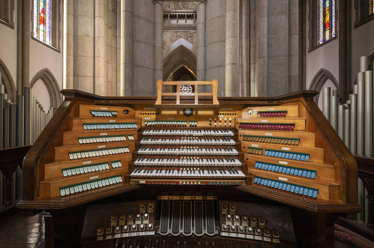
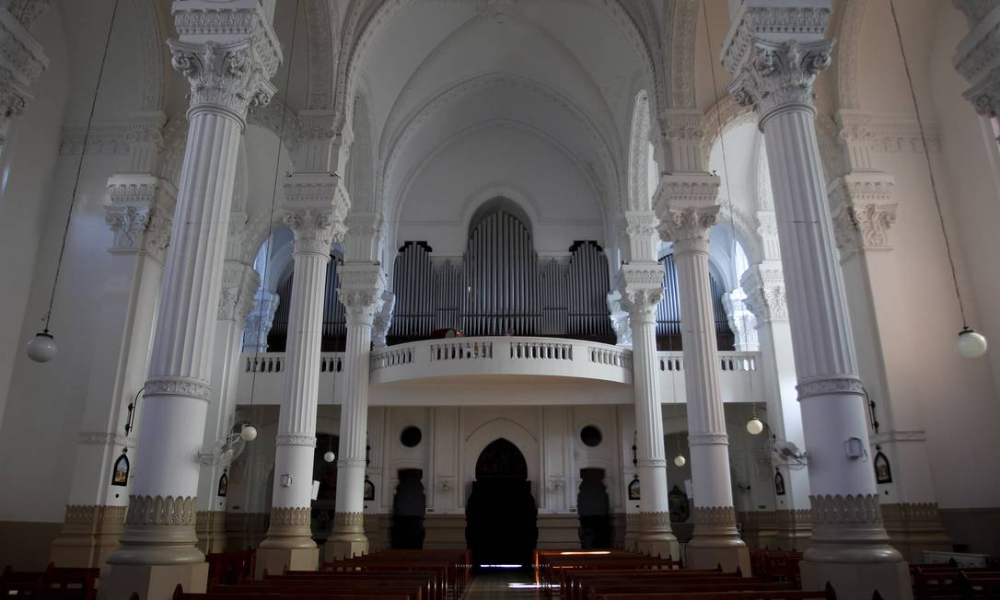

|


|
|
|
|
O Wanamaker Grand Court Organ, localizado na Filadélfia, Pensilvânia, é o maior órgão de tubos em pleno funcionamento do mundo, com base no número de flautas tocadas, no número de fileiras e em seu peso. O Órgão Wanamaker está localizado em um espaçoso Grand Court de 7 andares na Macy's Center City (antiga loja de departamentos Wanamaker's) e é tocado duas vezes por dia, de segunda a sábado.
O órgão é apresentado em vários concertos especiais realizados ao longo do ano, incluindo eventos com o Coro e Conjunto de Metais do Festival de Órgãos Friends of the Wanamaker. Possui aproximadamente 28.000 tubos.
Finalmente, um em terras tupiniquins. O órgão de tubos da Catedral da Sé é o maior instrumento musical da cidade de São Paulo. Com mais de 11 mil tubos, foi fabricado especialmente para o edifício pela empresa italiana Balbiani & Rossi, em Milão, entre os anos de 1953 e 1954. Inaugurado 10 meses após a abertura da Catedral, o órgão é separado em três partes: duas (dos lados direito e esquerdo do altar mor) abrigam os tubos e seus sistemas de compressores e foles; entre elas (sobre uma plataforma de madeira que acompanha o primeiro andar da parte traseira do templo) localiza-se o console de comando, com 5 teclados, 124 registros e um conjunto de pedais. Há duas décadas o órgão está fora de funcionamento. Para mudar este quadro, é atualmente desenvolvido um projeto de restauro e captação de recursos que propiciará a realização de concertos futuros com este impressionante instrumento.
É o segundo maior órgão de tubos da America Latina e o sétimo maior do mundo, possuindo 11.130 tubos sonoros. Fica localizado na Basílica de Nossa Senhora Auxiliadora em Niterói.
